中文
中文C. George et al.
Editor’s Note
Albert Einstein and other critics of quantum theory had long noted the difficulty of reconciling its description of the microscopic world—where it suggests particles often exist in a superposition of two or more states—with the existence of macroscopic objects always definite properties. Here Leon Rosenfeld and colleagues attempt to show how this inconsistency could be resolved by considering the “complementarity” of distinct modes of description at the atomic level, advocated by Niels Bohr. They argue that Bohr’s view could be put into a formal framework using the density matrix of quantum statistical mechanics. This proposal, physicists later showed, did not resolve the matter, which continues to be an important foundational problem for quantum theory today. 中文
ATOMIC theory raises the epistemological problem of harmonizing the detailed dynamical description of atomic systems given by quantum mechanics and the description of individual atomic processes and of the behaviour of matter in bulk at the level of macroscopic observation. The logical side of this problem is completely elucidated by the recognition of relationships of complementarity between the two modes of description: on the one hand, there is the complementarity expressed by the indeterminacy relations, which governs the application of the macroscopic space-time localization and momentum-energy conservation to the individual atomic processes; on the other, there is the complementarity between the account of the behaviour of a large system of atomic constituents given by quantum mechanics (and electrodynamics) and the description of the same system as a material body in terms of the concepts of macroscopic mechanics, electromagnetism and thermodynamics. 中文
The formal side of the problem, however, which consists in establishing the consistency of the rules connecting the formalism of quantum mechanics with the concepts used in the account of macroscopic observation, still leaves scope for a presentation more in accordance with the conceptual simplicity of the actual situation. A general treatment of the quantum theory of large atomic systems which satisfies this desideratum has been given in a recent article1. The purpose of this note is to outline the method and the principal results. 中文
The work pursued during the past decade by the Brussels group has clearly shown that the method best adapted to the investigation of large atomic systems is not the ergodic but the kinetic approach of statistical mechanics, applied to the limiting case of infinite systems (that is, systems of infinite degree of freedom, but such that the number of elements within a given phase extension has a finite limit). Because such systems have essentially a continuous energy spectrum, the vexed question of “coarse graining” can be ignored and the asymptotic limit of the density operator for times very large on the atomic scale, but finite, can be directly discussed. This discussion leads to the conclusion2 that the time evolution of the system may be split rigorously into formally independent “subdynamics”, characterized, in a manner presently to be explained, by certain projection operators depending on the correlations between the constitutive elements of the system. One of these subdynamics belonging to the projector
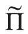
given by equation (7) below contains all the information about equilibrium properties and linear transport properties. We may therefore define the macroscopic level of description of quantum mechanics as the reduced description in terms of the variables of the -subspace. That such a reduced description is at all possible results precisely from the fact that the -subdynamics is expressed by an independent equation of evolution. The application of this analysis to the case of a measuring apparatus, initially triggered off by an interaction of atomic duration with an atomic object, shows in a surprisingly simple way that its evolution in -space conforms to the “reduction” rule of quantum mechanics; this important conclusion follows directly from the mathematical structure of the -subspace of the apparatus, which entails the elimination of the initial phase relations between the components of the density operator of the atomic object. Our paper contains a simple and general derivation of these remarkable results, which shows more clearly how these methods not only lead to a deeper understanding of the epistemological problems of atomic theory, but even to a significant extension of the scope of quantum mechanics. 中文
In a superspace defined as the direct product of the Hilbert space and its dual, the density operator  >(t) appears as a supervector, varying in time according to a Liouville equation of the form
>(t) appears as a supervector, varying in time according to a Liouville equation of the form
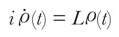
The Liouville superoperator L may be expressed in terms of the Hamiltonian H of the system. For this purpose, we may use a convenient notation for the special class of “factorizable” superoperators O ≡ M×N depending on a pair of supervectors M, N according to the definition O=MN; we may then write L = H×1 – 1×H. Our aim being to find the long time effect of correlations, we must, to begin with, compare our system, defined by the Hamiltonian H, with a “model” system H0, from which the interaction energy V, responsible for the correlations, is removed, in such a way that H = H0+V. The eigenstates of H0 form a complete orthogonal basis of representation in Hilbert space, from which we construct a similar basis in superspace: the latter may be divided into two classes of supervectors, those built up of pairs of identical (or physically equivalent) eigenstates, and those built up of pairs of different eigenstates; they belong, respectively, to two orthogonal subspaces of superspace, characterized by projection superoperators P0, Pc. Then the projections 0 = P0 and c = Pc of the density supervector correspond, respectively, to the average distribution densities and the correlation amplitudes. Putting L00 = P0LP0, L0c = P0LPc and so on, we obtain for 0 and c the coupled Liouville equations
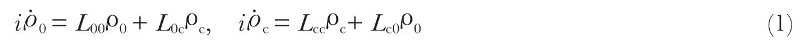
The next step is to extract from these equations the asymptotic forms 0(t), c(t) of 0 and c for large positive values of the time variable: these are expected to express our possibilities of prediction of the future evolution of the system on the macroscopic time scale. 中文
We must here restrict the generality of the Liouville superoperator in order to characterize the class of systems which we expect to exhibit the “normal” asymptotic behaviour, that is an approach to a state of equilibrium. To this end, we observe that the time evolution of the correlation density c is essentially governed by the superoperator Tc = exp(–iLcct), depending on the part of the Liouville superoperator which acts entirely in the correlation subspace. We assume accordingly that the asymptotic effect of this superoperator Tc(t) upon any regular supervector A which is not an invariant is to reduce this supervector to zero: limt→∞ Tc(t)A=0; we express by this assumption the fading of the system’s “memory” of its correlations. This condition, which may also be expressed as an analyticity condition on the Laplace transform of Tc(t), has first been verified in this form by a perturbation expansion, for infinite systems in whose description there enters a “small” physical parameter such as the coupling constant or the density3. More recently, it has been shown that for soluble models, such as the Friedrichs model, the analyticity assumption is satisfied rigorously (that is, independently of any perturbative approach) for a large class of interactions4. By means of this assumption, we readily derive from the second Liouville equation (1) the following relation between the asymptotic densities:
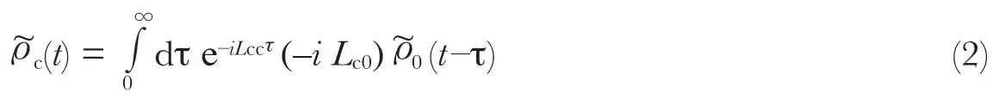
It has the form of an integral equation, showing how the asymptotic correlations build up by sequences of processes starting from the average situations through which the system passes in the course of time. 中文
We now introduce an asymptotic time evolution operator by writing
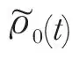
in the form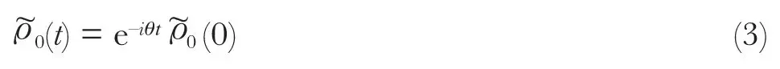
The advantage of the representation (3) is to reduce the integral equation (2) to a simple linear relation between and c(t) taken at the same time:
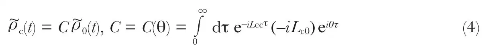
The first Liouville equation (1) then yields a functional equation for θ:
θ = L00 + L0c C(θ)
(5)
which can be solved by iteration. 中文
The total asymptotic density = 0 + c thus obtained has the remarkable property of being an exact solution of the Liouville equation. According to equation (4), it may be written in the form = Pa, with Pa = P0+C. It is again remarkable that this superoperator Pa has the characteristic properties of a projection operator in superspace, idempotency and “adjoint symmetry” (that is, it is such that the projection PaA of a self-adjoint supervector A is self-adjoint). The projector Pa defines a subspace in which the asymptotic density is confined. This subspace differs from the average subspace P0 by the adjunction of a part of the correlation subspace Pc, namely that part which is specified by the superoperator C; the latter may be interpreted as representing the building up of correlations from asymptotic average situations (we call it the superoperator of correlation creation)—it sorts out those correlation processes which have a long time effect and accordingly manifest themselves at the macroscopic level. Thus, the asymptotic density
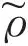
is not, as one might have expected, governed by a “kinetic equation” different from the dynamical Liouville equation: it is an exact solution of the latter, and its asymptotic character is conferred upon it by its confinement to a subspace defined by the projector Pa. 中文
The expression for the superoperator of correlation creation C, which enters in the definition of Pa, is clearly unsymmetrical in time, and gives the projector Pa the expected bias towards a preferred direction of the time evolution. In fact, time inversion transforms Pa into a different projector
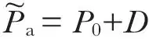
, where the superoperator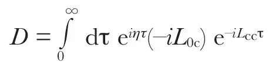
is the time-inverse of C; it contains the superoperator η which is the time-inverse of θ and obeys the equation η = L00+DLc0 derived from equation (5) by time-inversion. In contrast to C, the superoperator D describes sequences of “destructions” of correlations leading to asymptotic average situations. 中文
An important element is still missing in the picture: we must establish a link between the asymptotic density supervector
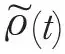
and the arbitrarily chosen dynamical density supervector(0) from which the time-evolution is assumed to start. This is readily supplied, however, on the basis of a further remarkable property (easily derived) of the superoperator θ and its time-inverse η:
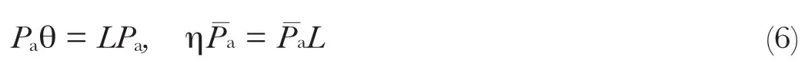
With the notation N0=1+DC, it follows from equations (6) and (3) that
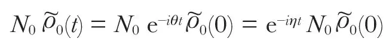
and, on the other hand,
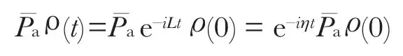
This shows that
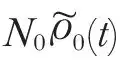
and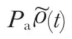
have the same time-evolution, governed by the superoperator exp(–iηt): we may therefore equate them at any instant and in this way fix the correspondence between the dynamical and the asymptotic density. This gives the quite fundamental relation, valid at any time,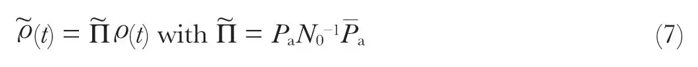
from which follows
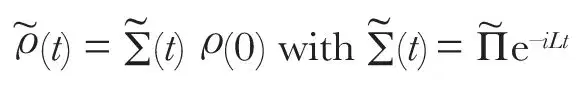
the answer to our last question, completing the theory. 中文
The striking feature about the superoperator occurring in equation (7) is that it is also a projector in the extended sense defined above (which does not include the property of self-adjointness); moreover, it is time-reversal invariant: it defines a time-symmetrical subspace of the superspace in which the asymptotic part of the time-evolution, starting from any given situation, remains confined, exhibiting the features observed at the macroscopic level; whereas the irregular fluctuations occurring on the atomic time scale are contained in the complementary subspace orthogonal to the asymptotic one. That such a clean separation between the two aspects of the atomic system could be effected is an entirely unexpected property specific to the density supervector representation: it could never have been found by a study of the evolution of the system in Hilbert space, for it can only be formulated in terms of the superspace formalism. 中文
The superoperator is not factorizable: one cannot ascribe any state vector to an asymptotic situation as we have defined it, but only a density supervector . In fact, as appears from equation (4), the correlation part
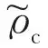
of the density is directly derived from the part 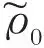
expressing the average probability distributions of the system; owing to this remarkable structure of the projector , the evolution in -space may be entirely described in terms of probabilities only. In particular, the “reduction of the wave-packet” of an atomic system after its interaction with a measuring apparatus is a direct consequence of this property of the -space description: the essential point being that the apparatus must necessarily belong to the macroscopic level of quantum mechanics, and that its behaviour must accordingly be described in terms of its -space variables (loosely speaking, the behaviour of the apparatus has “thermodynamical” character, inasmuch as variables pertaining to thermodynamic equilibrium or near-equilibrium states all belong to -space). Any phase relations in the initial state of the atomic system are therefore wiped out (that is, they are rejected into the orthogonal subspace): this is the only meaning of the “reduction” of the initial state of the atomic system resulting from the measurement. As to the human observer, his interaction with the apparatus is also entirely described in the -subspace, and therefore without any influence whatsoever on whatever goes on in the orthogonal subspace. 中文
One further point should be mentioned. The theory gives us a simple criterion to decide whether the system shows the normal macroscopic behaviour described by thermodynamics. The superoperator of asymptotic time-evolution θ is closely related to a “collision superoperator” defined as the Laplace transform of the superoperatorL0cTc(τ) Lc0:
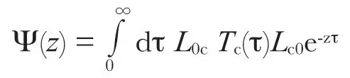
Indeed, equation (5) may be written as a functional relation in terms of Ψ(z):
iθ = iL00+ Ψ(–iθ)
(8)
Now, an homogeneous system (a system for which L00 = 0) will obviously not exhibit any tendency towards equilibrium if the collision operator vanishes identically. Equation (8) then shows that it will exhibit an irreversible tendency towards equilibrium provided that θ itself does not vanish identically. This “condition of dissipativity” is a practical one: it can be tested in concrete cases4 by actual computation of θ. 中文
It is thus clear that the epistemological consistency problem raised at the beginning of this note is completely answered by the neat, clear-cut representation we obtain for the complementarity between the two levels of description of atomic phenomena. It need hardly be pointed out that the problem here discussed of the macroscopic level of quantum mechanics is just a simple illustration of a general method of representation in superspace, which actually amounts to an extension of the scope of quantum mechanics. Perhaps the most significant feature of the method is the introduction of generalized projectors, involving the replacement of self-adjointness by time-inversion invariance (which reduces to the former in the absence of dissipation, that is, for systems for which the collision operator vanishes)—a generalization which may be expected to find application to a large variety of problems. 中文
(240, 25-27; 1972)
C. George and I. Prigogine: Université Libre, Brussels, and Center for Statistical Mechanics and Thermodynamics, Austin, Texas.
L. Rosenfeld: Nordita, Copenhagen.
Received January 28; revised March 20, 1972.
References:
1. George, C., Prigogine, I., and Rosenfeld, L., Det kgl. Danske Videnskabernes Selskab, mat.-fys. Meddelelser, 38, 12 (1972).
2. Prigogine, I., George, C., and Henin, F., Physica, 45, 418 (1969).
3. Balescu, R., and Brenig, L., Physica, 54, 504 (1971).
4. Prigogine, I., Non-Equilibrium Statistical Mechanics (Interscience, 1962).
5. Grecos, A., and Prigogine, I., Physica, 59, 77 (1972).
6. Grews, A., and Prigogine, I., Proc. US Nat. Acad. Sci., 69, 1629 (1972).